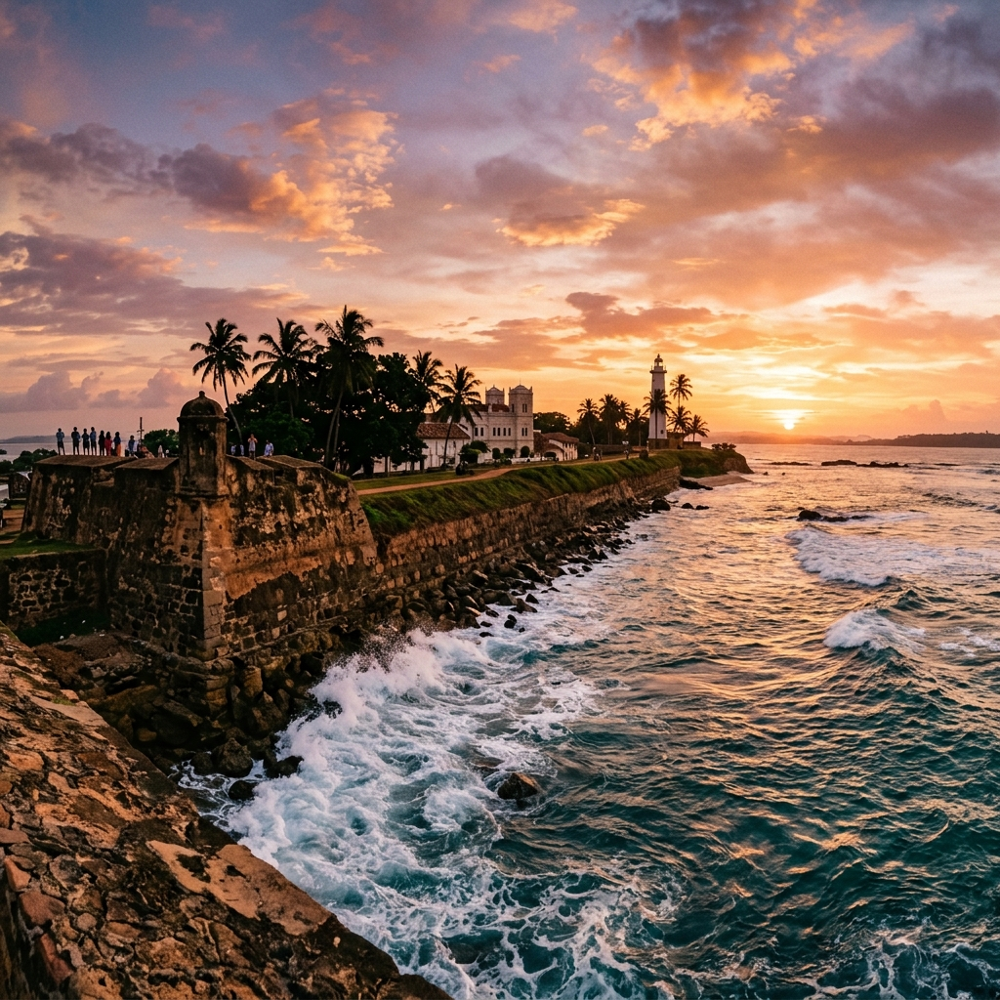

The Southern Coast
Colombo, Galle, Unawatuna, and Mirissa. Fort walls, coral reefs, and the start of a 240-day journey.

The journey begins not in the cold air of the Himalayas, but in the thick, salted humidity of the Indian Ocean. Sri Lanka's southern coast is a slow unfurling — a place to shed jetlag, put away the winter coats, and learn the rhythm of moving again.
From the colonial chaos of Colombo, take the coastal train south to the Dutch fort of Galle. Unawatuna is where you earn your PADI Open Water diving certification, breathing underwater for the first time. In Mirissa, watch blue whales cresting in the deep blue. This is a soft landing before the harder edges of the continent.
Why this leg is worth it
It's the perfect transition. A warm, welcoming coast that lets you recalibrate from real life to road life. You leave this coast certified to dive and fully thawed out.

Galle Fort walls
Walk the 16th-century ramparts at sunset. Half colonial ghost town, half thriving community holding back the sea.

PADI Open Water
Four days in the reefs of Unawatuna learning to breathe underwater. An entirely new biome added to your world.

Blue whales in Mirissa
Taking a boat off the continental shelf to see the largest animal that has ever lived surfacing just off the bow.
Practical · Southern Coast
Kneeling on the ocean floor in Unawatuna. Only the sound of your own breathing. The surface world disappearing entirely.